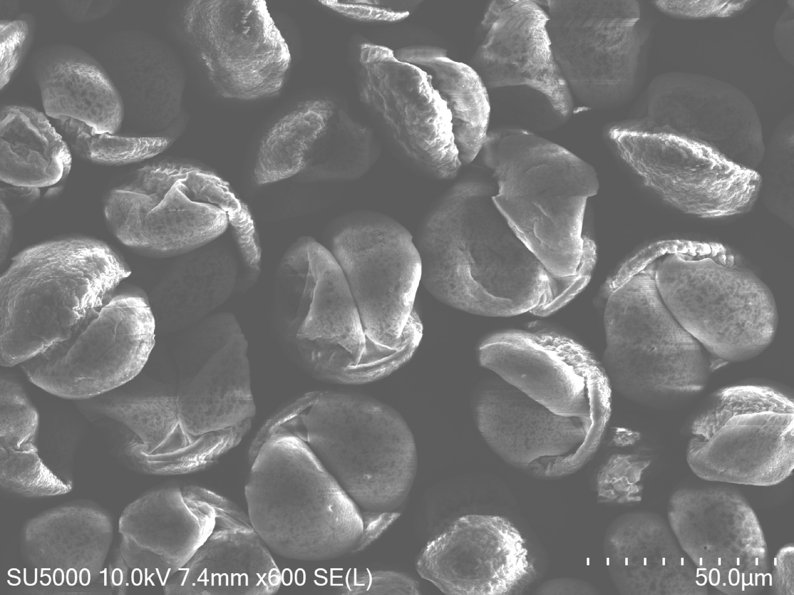
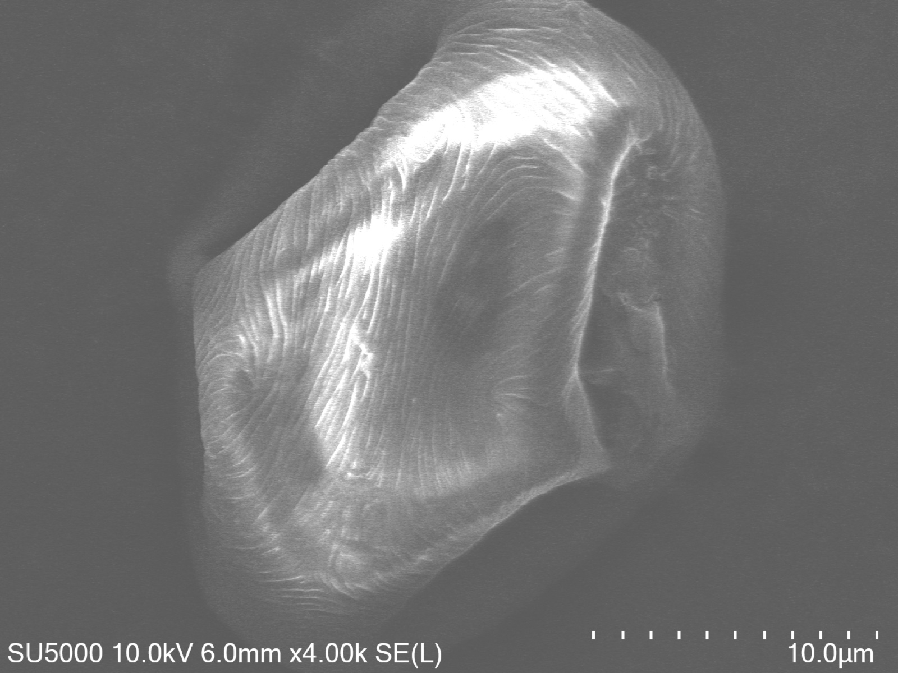
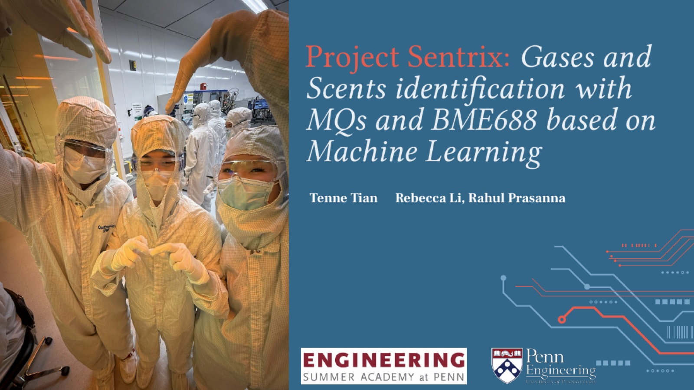

Reliable autonomous landing where controlled conditions disappear.
The project
This project uses residual learning to enable accurate quadrotor landing under strong disturbances and robust disturbance rejection in real-world environments. The integrated drone-rover system is designed to collect ice sheets in Greenland’s extreme conditions.
My work
Engineer hardware for the autonomous drone-docking system
Optimize and test landing algorithms for accuracy, reliability, and energy efficiency
Build a DIY wind tunnel for disturbance and wind-resistance testing
02 / RESEARCH · 2024—2026
Graphene Pollen Biosensor
Can an invisible allergen become an electrical signal?
The graphene four-electrode sensing device

Pine pollen under SEM · 600×

Poplar pollen under SEM · 4,000×
What I built
Fabricated, chemically modified, and characterized graphene-based electrochemical sensors. I validated the results against hospital and weather-station field data and documented the methodology across an 18,500-word paper and 40,000-word experimental log.
Outcome
Regeneron ISEF 2026 Grand Award
Published in Advances in Materials Physics and Chemistry
Became the sensing foundation for four live stations
The deployed station in BeijingAn early field prototypeField deployment
The system
I built and deployed four monitoring stations, designed the station-to-app pipeline, added Wi-Fi for automatic updates, and improved accuracy in wind and rain.
I designed the gaze-to-language pipeline, turning a stable gaze fixation and scene capture into a focused prompt and a spoken suggestion for a caregiver.
Translating environmental evidence into a civic argument.
The work
I authored a 9,800-word proposal for the Beijing municipal government, connecting pollen-allergy evidence with urban-tree management and prevention.
Impact
Contributed to passage of a new local policy
Regulation of pollen-producing trees
Connected technical research to municipal action
06 / WEARABLE SENSING · 2025
Scent Sensor + ML Classifier
Can a compact sensor learn the signature of gases and scents?

Project Sentrix at UPenn EngineeringThe three-person project teamMQ SENSORS+BME688→ML
What I led
I led a three-member team across the dual-sensor build, raw-data collection, calibration, and machine-learning pipeline. We trained the BME688 using clean-air and coffee scent measurements and tracked gas concentration with MQ sensors.
I led a four-person team building the platform and its AI-agent workflow from document input to generated interpretation and prompt prescription suggestions.
Status
Four-week development cycle
Prototype entered trial at Beijing SJS Hospital
Designed as decision support, not a replacement for clinical judgment
NO PROJECTS MATCH THESE FILTERS.
FIG. 03 — ABOUTPROFILE / BACKGROUND
TENNE TIAN — DUKE UNIVERSITY
ENGINEERING, WITH A SECOND LENS
Tenne Tian
I’m a first-year Electrical & Computer Engineering student at Duke, considering Philosophy as a second major. My work moves between nanotechnology, sensor systems, machine learning, and robotics — I love the magical combinations of AI and Hardware!
Technical path
01
Hardware Engineer — Duke General Robotics LabSEP 2026 — PRESENT
02
Researcher — Chinese Academy of SciencesDEC 2024 — JUN 2026